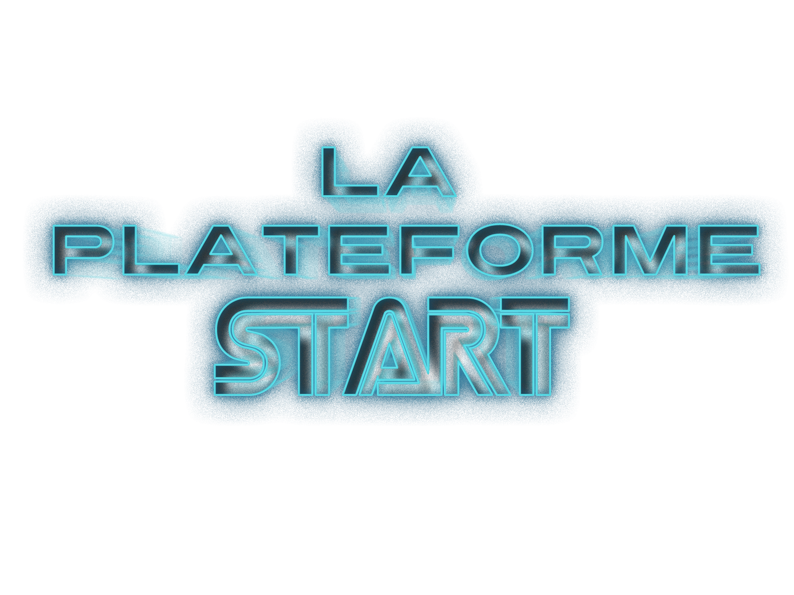
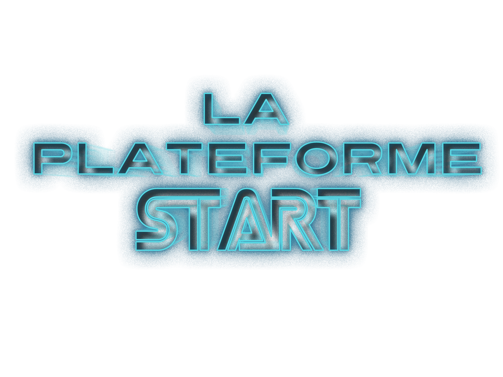
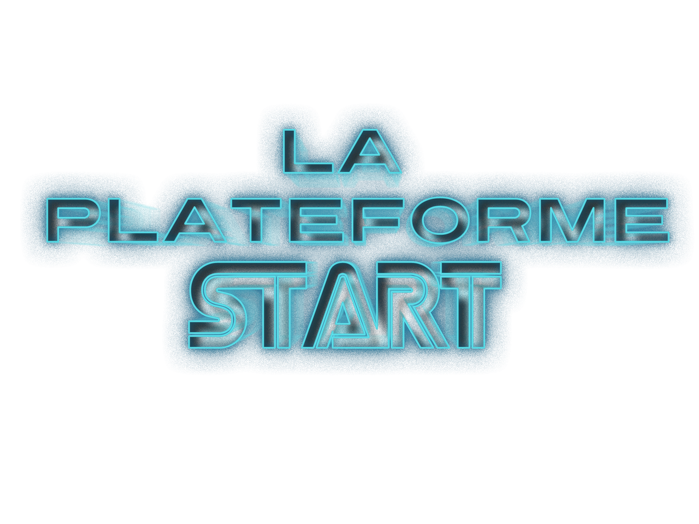
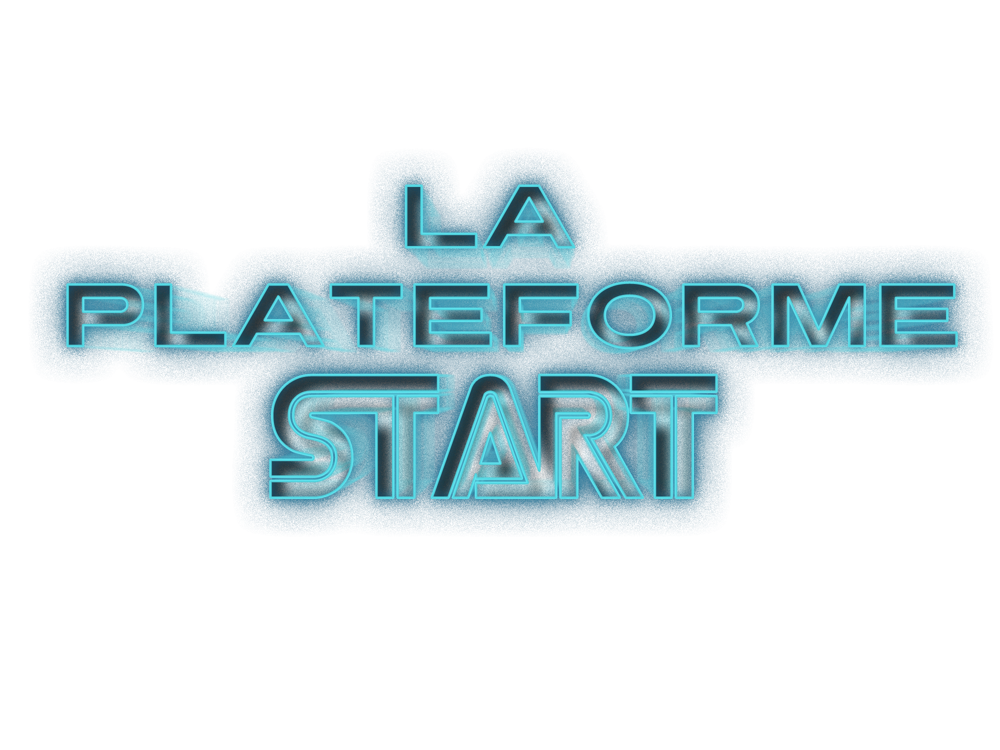

Une véritable opportunité de trouver un job dans le numérique !
Amazon Web Services (AWS) est la plateforme cloud la plus
complète et la plus largement adoptée au monde. AWS
constitue l’écosystème le plus étendu et le plus dynamique,
avec des millions d’utilisateurs actifs et des dizaines de milliers
de partenaires à travers le monde. La variété de ses clients
issus de presque tous les secteurs et de toutes les tailles,
notamment des startups, des entreprises et des organisations
du secteur public, témoigne des innombrables utilisations
possibles d’AWS.
Le programme AWS re/Start est une formation gratuite qui enseigne
les fondamentaux du cloud AWS afin d’aider les apprenants à
accéder à des postes juniors dans le domaine du cloud.
Grâce à des exercices basés sur des scénarios, des ateliers
pratiques et des cours, les apprenants acquièrent des compétences
sur Linux, Python, les réseaux, la sécurité et les bases de données
relationnelles.
Les apprenants bénéficient d’une formation spécifique et
développent des techniques efficaces de support, de dépannage, de
transfert et d’automatisation des tâches de premier niveau.
Après avoir acquis et mis en pratique des compétences techniques
sur le Cloud AWS, les apprenants préparent la certification Cloud
Practitioner à l’aide d’examens blancs, puis la
passent gratuitement.
AWS re/Start et La Plateforme_ accompagnent aussi les apprenants
dans leur retour à l’emploi en les coachant et en les préparant aux
entretiens avec les employeurs.
Prérequis :
Inscrivez-vous maintenant et demandez des informations !